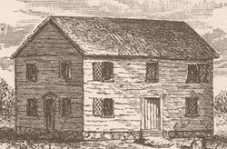
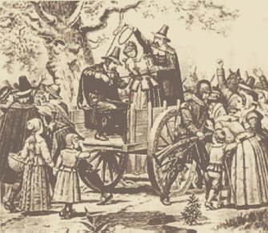
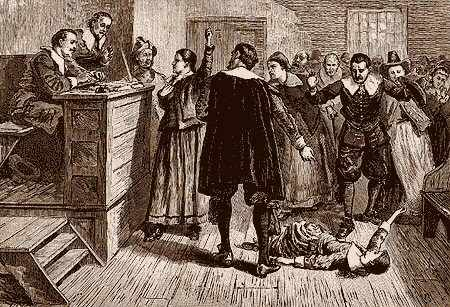

|
In January 1692, in Salem, the pastor’s daughter
Elizabeth Parris and her cousin, Abigail Williams, began to exhibit behavioral problems
of concern to those around them. Nine-year old Elizabeth would burst into tears inexplicably
and throw screaming fits at the top of her lungs, while 11-year old Abigail began crawling
on all fours yapping like a dog. Soon, six other girls, including Ann Putman Jr., the
daughter of the Sergeant, also started performing strange contortions, shrieking and foaming
at the mouth. Subsequently other, more serious symptoms began to appear: tremors,
convulsions, shortness of breath and hallucinations.
In February, doctors called to the girls’ bedsides were
unable to identify the cause of their illness. As impotent as his colleagues, Salem’s doctor
William Griggs went so far as to declare that the only explanation for the girls’ behavior was
that they were under the influence of Satan. From that point on, every time someone fell ill or
began acting abnormally, people would seek out the "warlock" or "witch" responsible for that
person’s condition.

In March, under the pressure of villagers eager to know
what was tormenting them, Elizabeth and Abigail denounced Samuel Parris’s servant Tituba,
along with two elderly widows already despised by the community, Sarah Osborne and Sarah Good.
The three women were immediately accused of witchcraft and thrown in jail.
Magistrates John Hathorne and Jonathan Corwin were responsible for interrogating the suspects
at the village meeting house. The two elderly women fervently denied the accusations, while Tituba,
a West Indian slave and adherent of Voodoo, made this shocking declaration: "The Devil came to me
and bid me serve him for six years". Despite the terror this confession provoked amongst members
of the assembly, she went on to specify how a white-haired man, dressed in black, appeared to her
and told her he was God. After recounting how the man asked her both to believe him and serve him
for six years, Tituba then described how he presented her a book in which she left a mark with her
own blood. Finally, Tituba maintained that a number of marks already figured in this book, including
those of her two co-defendants and several other residents of Salem and neighboring villages.
The whole town was struck with fear and began to pray, but the young girls’ fits continued all
the more. Twelve-year old Ann Putnam Jr. in turn accused Martha Corey and Rebecca Nurse of having
made a pact with the devil. Despite the two women’s good reputation, local Chief Justice William
Stoughton managed to convince the jury to jail them.
From April to September, people’s fear turned into mass
hysteria. Villagers started having visions; some imagined ghosts whirling around them, while others
pictured creatures creeping into their bedrooms. Everyone began to suspect everyone else;
accusations began to fly. The incriminations multiplied, and the jails started to fill at an alarming
rate. In a matter of a few weeks, over 70 people had been thrown behind bars for basically hare-brained
or self-interested reasons: one person had a baby out of wedlock, while another had a wart on his back;
one person was accused of telling futures, while another was denounced for drinking unknown beverages;
one person had failed to pay debts, while another merely suffered from a bad reputation, etc.
In June, faced with overflowing jails, a special tribunal
called the Court of Oyer and Terminer, or "Witch Court," met in Salem to judge all those suspected
of witchcraft. Throughout this mass trial, the majority of the accused claimed their innocence,
but several women, out of fear of torture or somehow hoping to save themselves in this way,
confessed to acting in concert with the Devil. Death sentences were handed down and the first
victim, Bridget Bishop, was hanged on June 10.

On July 19, Sarah Good, Rebecca Nurse and three other "witches"
were executed. On August 19, another group of five of the accused, which included Salem’s former
reverend George Burroughs, was hanged straight away. On September 22, a group of nine of the condemned,
which included Martha Corey, was led to the gallows.
To these 20 or so executions must be added
those who died in prison through torture, such as Sarah Osborne, or those who perished due to the
unsanitary condition of the jails. Finally, Giles Corey, a rich, 80-year old farmer whose ghost
supposedly haunted the dreams of Ann Putman Jr.’s mother, steadfastly refused to be judged.
His terrible punishment was immediately carried out: he was stretched out upon the ground, his body
covered with heavier upon heavier stones until he was smothered and crushed to death. Before succumbing,
he declared: "But if a word could save me, and that word were not the Truth;
nay, if it did but swerve a hair's-breadth from the Truth, I would not say it."

In October, a number of Salem’s residents began to doubt the
veracity of the eight girls’ accusations. Some of them had even denounced their own parents,
as well as the judges supposedly protected by God himself.
Alerted by a letter from Thomas Brattle
denouncing the absurdity of the witch hunt, and frightened by the increasing number of accusations
(his own wife had started to worry), Governor William Phips rejected the use of ghostly visions as
evidence. He ordered that henceforth no accusation or trial could be based upon the testimony of
spectral apparition without tangible proof. He dissolved the Court of Oyer and Terminer and replaced
it with The Superior Court of Judiciature.
In November, the new court set free all those waiting to be
judged and pardoned those already condemned; Tituba, the first of the accused, benefited from this
clemency: she was cleared after retracting her previous statements.
In December, jurors admitted publicly to having condemned and
put innocent people to death, and begged forgiveness of the victims’ families. Thus ended the tragedy
of the Salem witch trials, which sent more than 200 innocent people to prison and another 30 or so to
their deaths.
One of the accusing girls admitted at the time: "We did it to entertain ourselves
and had a good time.".
|


 The Witches of Salem
The Witches of Salem 
 Chronology of Events
Chronology of Events